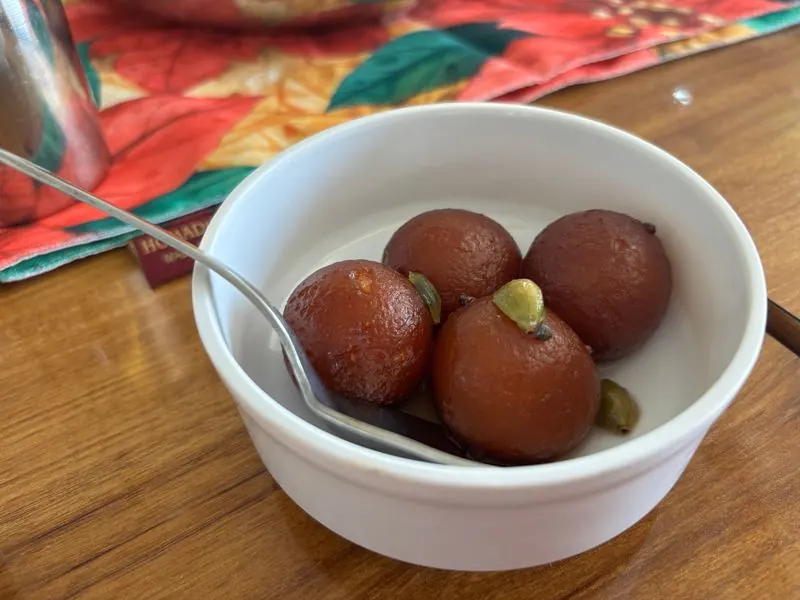
Gulab Jamun
Soft, syrup-soaked jamun, served warm from the tray.
New Satellite Town · Sargodha
A long-established Sargodha bakery and sweet shop. Trays of traditional mithai, breads and pastries from the oven, and celebration cakes made for the occasion — at two branches across the city.
Open daily · 6:50 AM – 11:30 PM
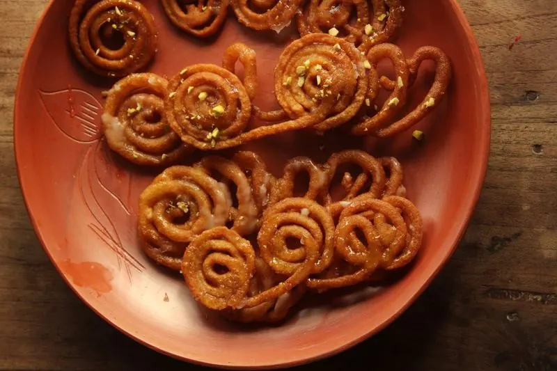
4.2 ★
503 reviews
Fresh jalebi, straight off the tray.
01 — The Counter
The counter is the heart of the shop: traditional sweets made in the old way, laid out fresh every morning. Call ahead if you want a full tray kept aside for an occasion.

Soft, syrup-soaked jamun, served warm from the tray.
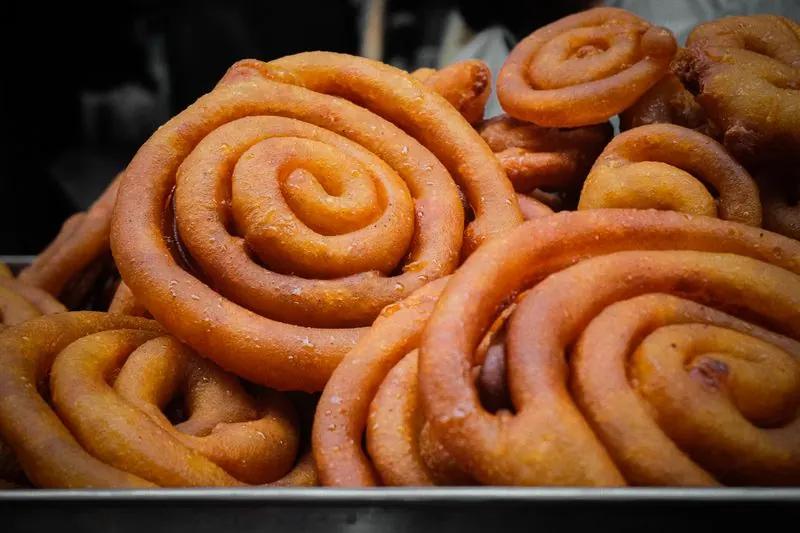
Crisp golden spirals, fried fresh through the day.
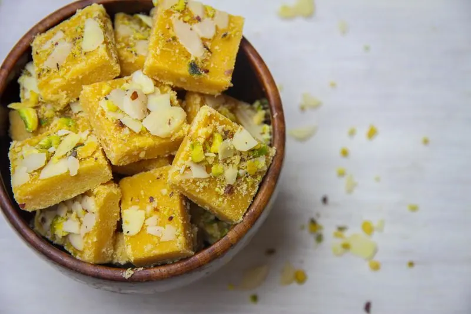
Gram-flour barfi finished with almonds and pistachio.
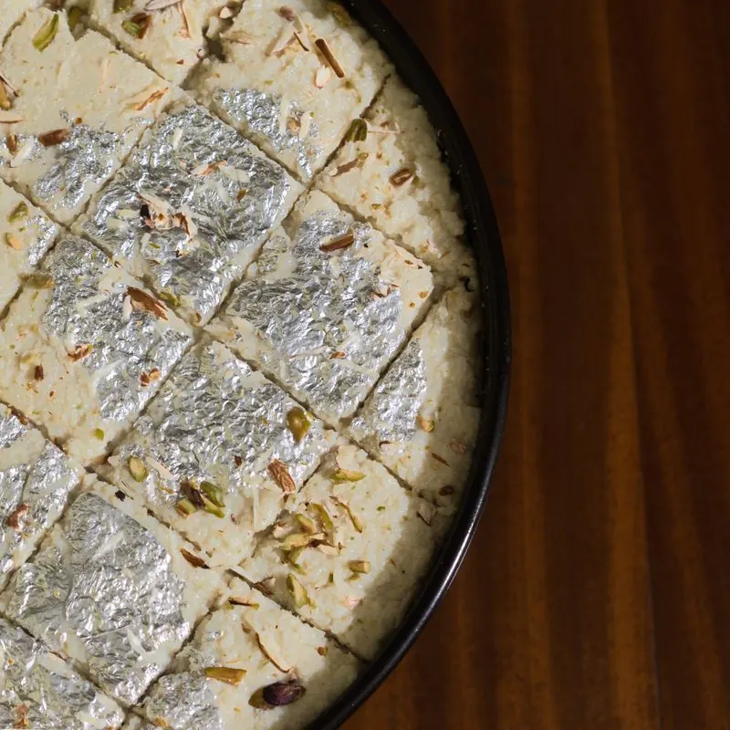
Milk-cake squares with a silver-leaf finish.
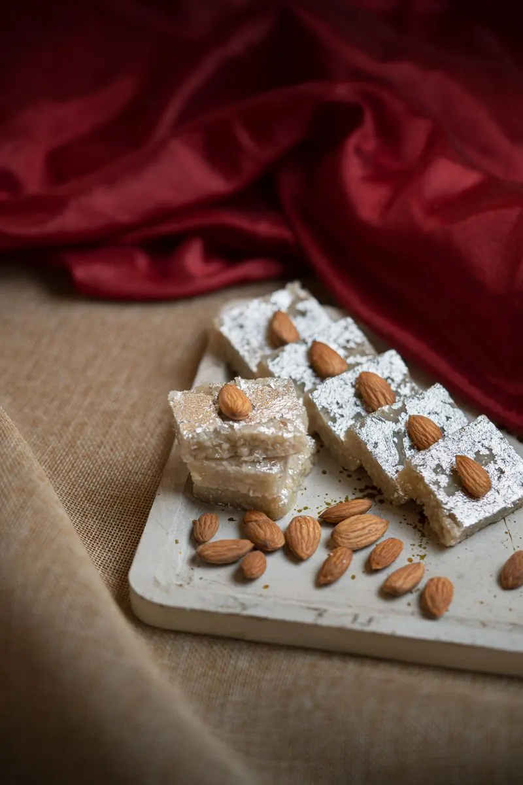
Badam barfi, topped with whole almonds.
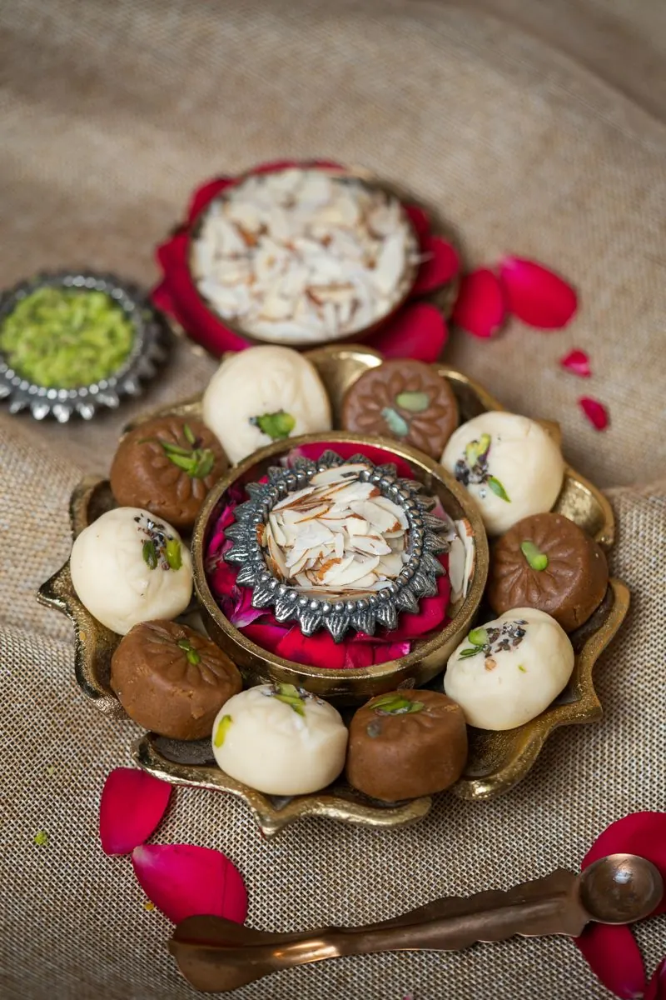
Peda and mixed sweets, boxed by weight for the table or for gifting.
Prices on request — call the branch for today’s rates.
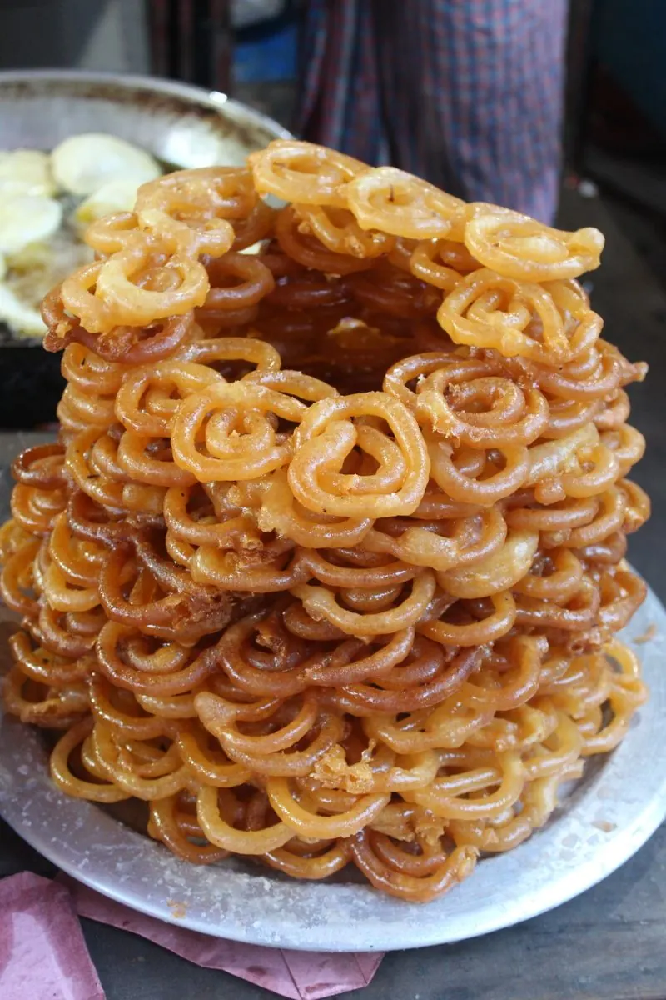
02 — Fresh from the oven
The bakery side of the shop runs all day: breads and pastries come out of the oven in batches, and regulars time their visit to the fresh trays. It is the wide variety on the counter that reviewers keep coming back for.
03 — Cakes, made to order
Custom and celebration cakes are made to order — for birthdays, weddings and family gatherings. Call the branch, tell them the occasion, and collect on the day.
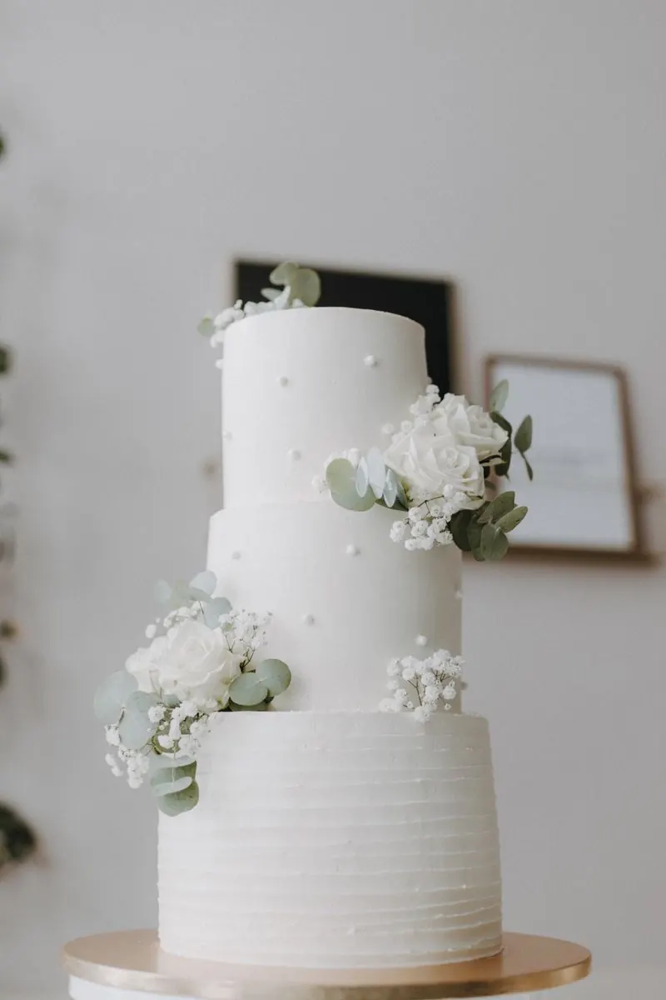
Tiered cakes dressed with fresh flowers for the baraat and walima.
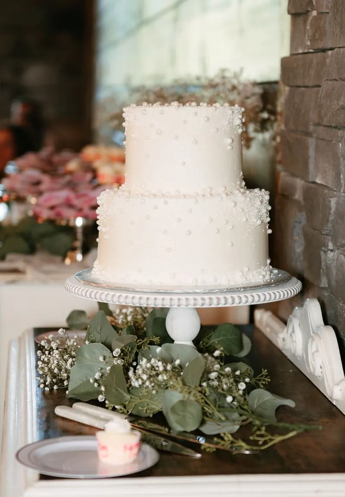
Two-tier cakes for birthdays, engagements and family dinners.
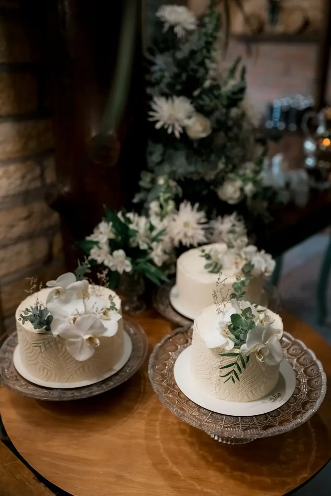
Smaller floral cakes for a quiet celebration at home.
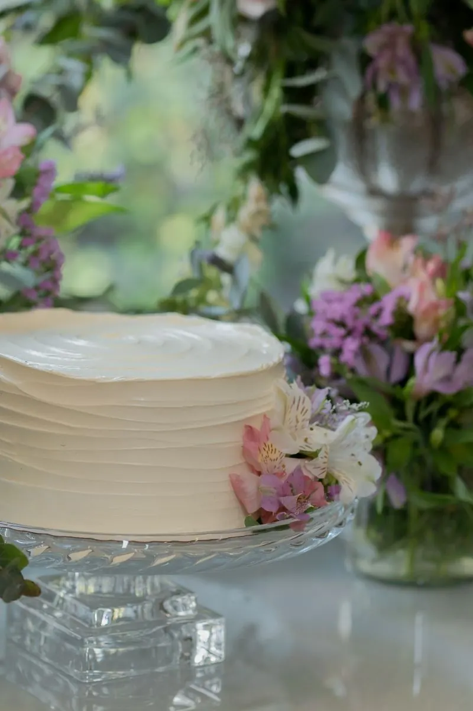
Plain iced cakes finished with fresh flowers on the day.
04 — Occasions & gifting
Mithai is how Sargodha marks a happy day. The shop boxes sweets for weddings, Eid and birthdays — pick a mix at the counter or call ahead for a larger order.
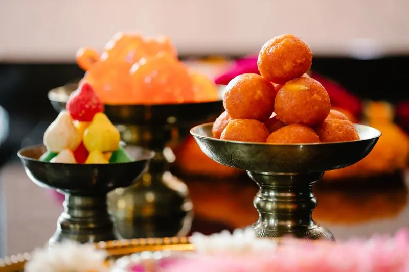
Mithai trays and boxes for the wedding days — order ahead for the full guest list.
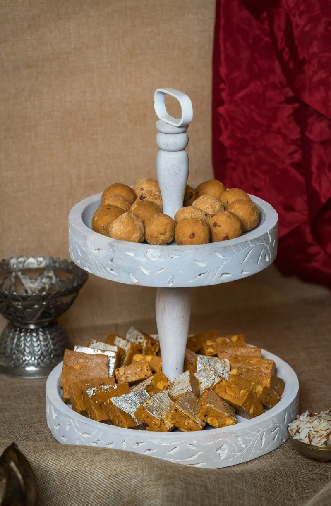
Ladoo and barfi by the kilo for Eid mornings and family visits.
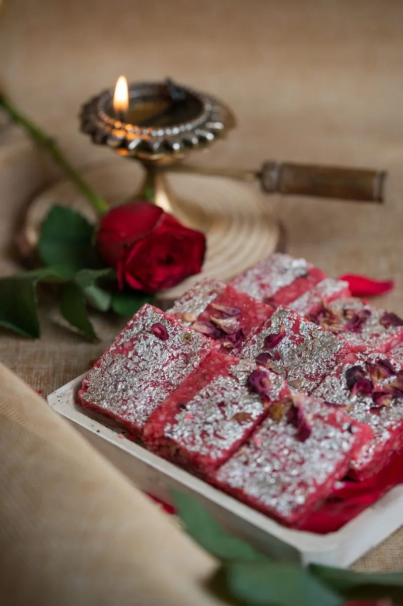
Silver-leaf barfi and mixed boxes, made to be handed over with the salaam.
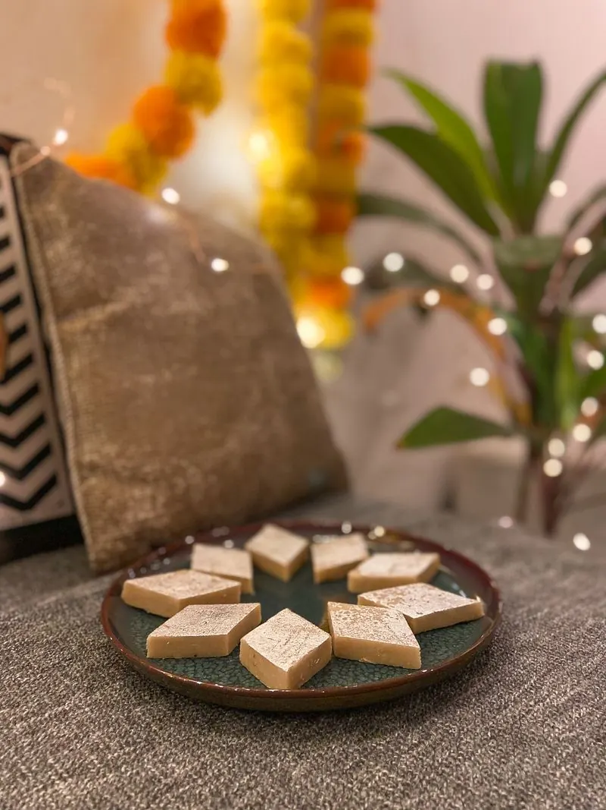
Kaju katli and a small celebration cake — the two together, from one counter.
05 — Why Sargodha comes here
Five themes come up again and again across the shop’s 503 Google reviews.
Reviewers describe a long-established bakery, kept clean and in good order — a fixture of the city, not a new opening.
The variety is the draw: mithai, breads, pastries and cakes all on one counter, so one stop covers the whole table.
Attendants who know the regulars and serve the counter patiently, even on busy days.
The old Bashir Colony shop and the newer New Satellite Town branch — whichever side of the city you are on.
Delivery is available for orders, and payment at the counter is cash.
06 — From the counter
Tap any photo to see it larger.
07 — Two branches
One shop, two counters. The New Satellite Town branch is the newer, main branch; the Bashir Colony shop is the old branch on Main Lari Adda Road.
Main branch
New Satellite Town, Sargodha, Punjab
Open daily · 6:50 AM – 11:30 PM
Call this branchOld branch
Street No. 1, Basheer Colony, Main Lari Adda Road, Sargodha
Hours vary by branch — call ahead to confirm.
Call this branch08 — Visit & hours
The main branch is in New Satellite Town, open from early morning until late at night, seven days a week.
Hours shown are as listed; call ahead to confirm before a special trip.
09 — Questions
Yes — delivery is available. Call the branch you want to order from and arrange it on the phone.
Payment at the counter is cash. Bring cash with you, or settle the order when you call.
Call 0305 6667781, tell them the occasion, and agree the flavour and size. Then collect the cake from that branch on the day.
Either one. New Satellite Town is the newer main branch (0305 6667781); the old branch is on Main Lari Adda Road, Bashir Colony (0335 0260285).
Daily from 6:50 AM until 11:30 PM. Hours are as listed — call ahead to confirm before a special trip.
The shop’s online home is its Facebook page. Prices change with the day’s rates, so call the branch for today’s prices.
Call the New Satellite Town branch and tell them what you need — a tray of mithai, fresh breads, or a cake for the weekend.